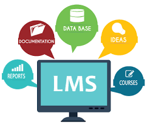
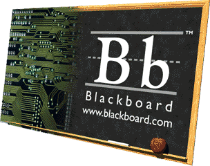

MENCIONE 3 LMS

LOS EJEMPLOS DE LMS SON :
**PLATAFORMA BLACKBOARD

Blackboard es una herramienta tecnologica que sirve para entregar los cursos al usuario final (tutor-aprendiz) mediante la interaccion via Internet, cuenta con una interfaz facil de usar tanto para los aprendices como para los tutores. Su ejecucion es a traves de cualquier navegador de Internet, esto es, no requiere de un cliente para su operacion.
**SCHOOLOGY
Es una plataforma gratuita de aprendizaje, sencilla y facil de usar, pero tambien es una red social de docentes y estudiantes que comparten opiniones, recursos etc.
**MOODLE
Moodle es un software disenado para ayudar a los educadores a crear cursos en linea de alta calidad y entornos de aprendizaje virtuales. Tales sistemas de aprendizaje en linea son algunas veces llamados VLEs (Virtual Learning Environments) o entornos virtuales de aprendizaje.